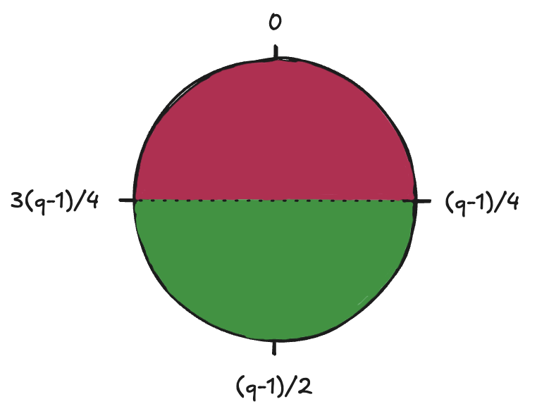
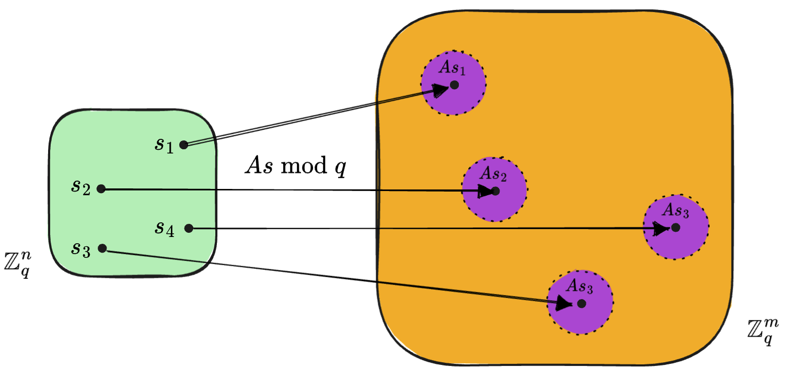

Learning With Errors (LWE)
October 20, 2025
LWE is a mathematical problem that is used as the foundation of many cryptographic protocols, especially
post-quantum cryptography. While public cryptographic schemes such as RSA[1]
can potentially be broken under conditions ideal to Shor's algorithm[2],
which runs in polynomial time on a quantum computer with sufficient number of qubits, LWE remains unbroken because it's based on lattice problems that
even quantum computers can't effeciently solve.
Formalization
Notation:
- \(\mathbb{Z}_q = \{0,1,2,\cdots,q-1\} \)
- \(x \in_R S \) means that \(x\) is selected uniformly and independently at random from \(S\)
Definitions:
- \(s \in_R \mathbb{Z}^n_q \) is the secret message to be shared
- \(e \in_R [-B,B]^m \) where \(B \ll q/2 \) is the error
- \(A \in_R \mathbb{Z}^{m \times n}_q \)
- \(b = As + e \pmod q \in \mathbb{Z}^m_q \)
Given these definitions, LWE is defined as solving for the secret, \(s\), in the equation below:
\[A\vec{s} + \vec{e} = \vec{b}\]
Recall that the form of the equation without the error, \(A\vec{s} = \vec{b}\), can be solved easily using gaussian elimination[3]
given that \(m > n\).
Choosing the error bound
Choosing a good error bound is very important because LWE relies on the introduction of errors. If the error bound is too large,
decryption becomes difficult since it hard difficult to separate the error from the message even for a legitimate recepient. If
the error bound is too small, it has been shown that LWE can be solved in subexponential time[4]
given a few other conditions hold true.
Here's an intuitive way of thinking about choosing an error bound that balances both security and decryption reliability. Think of the modulo
space as a circle shown below.

Figure 1: Intuitive way of looking at the mod operation and ideal error bound selection.
Imagine you want to send a binary message \(\mu \in \{0,1\}\) using LWE. Let's say we "encode" bit 0 near 0 and "encode" bit 1 near \((q-1)/2\) and then add an
error \(e\) to it, we obtain \(\mu \cdot \lfloor{q/2}\rfloor + e\). Putting this together with the LWE equation, the sender will construct
\(As + \mu \cdot \lfloor{q/2}\rfloor + e = b\) since they have the secret key, \(s\) and send it to the recepient. The recepient will then compute
\(v = \mu \cdot \lfloor{q/2}\rfloor + e = b - As\) since they have the secret key as well. Now, in order to figure out the value of \(\mu\), the recepient simply looks where
\(v\) lies in the circle shown in figure 1. If it's in the pink region, then \(\mu = 0\) and if it's in the green region, \(\mu = 1\). Notice that this is only possible if \(|e| \lt (q-1)/4\).
Therefore, \(B = (q-1)/4\) is the most ideal value for the error bound.
Uniqueness of the LWE solution
Having multiple solutions to an LWE problem is an issue since it gives an adversary the opportunity to guess one of the correct solutions. Therefore, LWE assumes
that \(m \gg n\), which in turn means that the probability of having more than one solution is negligible. This implication becomes more intuitive by looking at the
diagram below:

Figure 2: Transformation visualized to depict uniqueness assumption
Figure 2 shows the transformation that occurs when moving from \(s \in \mathbb{Z}^n_q\) to \(As \pmod q \in \mathbb{Z}^m_q\). Given that
the value of \(s_i\) has \(q\) possible values, there are a total of \(q^n\) transformed points in \(\mathbb{Z}^m_q\). Therefore, there are
\(q^n\) spheres of dimension \(m\) centered around these transformed points. The uniqueness of the LWE solution is only guaranteed if no two
of the \(q^n\) spheres overlap. If we assume \(m \gg n \), and that the centers of these spheres are selected at random,
then we can say that the probability of two spheres overlapping is very small, hence the probability of a unique solution is very high.
Hardness of LWE
The hardness of LWE boils down to the Closest Vector Problem (CVP) - a lattice problem that is NP-complete. A lattice is defined as a set of points
\(L = \{a_1v_1 + a_2v_2 + \cdots + a_nv_n | a_i \in \mathbb{Z}\}\) for linearly independent vectors \(v_1 \cdots v_n \in \mathbb{R}^n\) that
form the basis of \(L\). The basis of a lattice is not unique and this helps to hide its structure since two different basis
vectors can yield the same lattice.
Definition of CVP
Given a lattice \(L \in \mathbb{Z}^m_q\), a target vector \(t \in \mathbb{Z}^m_q\), where \(t \notin L\), find a lattice vector
\(v \in L\) such that:
\[v = \arg \min_{u \in L} ||t - u ||\]
CVP is quantum-safe as there is no polynomial time algorithm developed yet to solve it. By extension, LWE is quantum-safe. The hardness of LWE is also based on the added
error itself. As assumed by some formulations of the problem, even if there is an oracle which emits new equations every time it's
asked, increasing the value of \(m\) does not increase the amount of information in the system because the error in the equations is
always random. This is why, even with unlimited equations, possibly being provided by an oracle, LWE remains hard[5]
Acknowledgments:
|